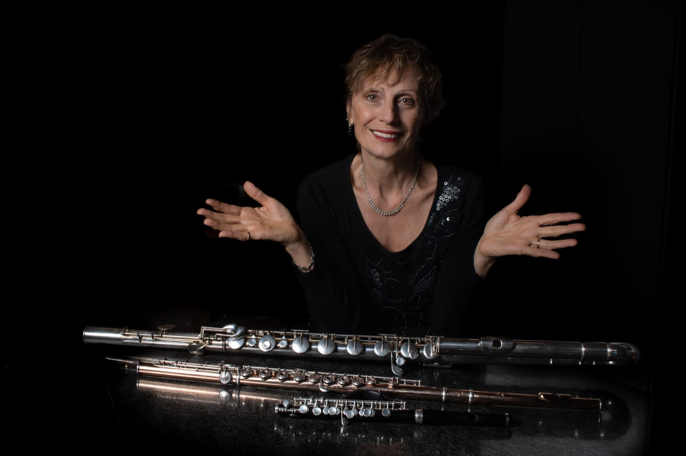

Adriana Emilce Fernández
(Flauta 1)

Egresó del Conservatorio de Música de Bahía Blanca como Profesora
Superior de Flauta Traversa.
Fue docente de la cátedra de flauta en dicha institución.
Integró la Orquesta Sinfónica Provincial como Solista Principal Doble
Instrumento, puesto que obtuvo por concurso.
Estudió con los Maestros Carmelo Azzolina, Raúl del Castillo, Oscar
Piluso, Lars Nilsson, Patricia Da Dalt, Jorge de la Vega y en piccolo con
Martín Auza.
Desde temprana edad integró diferentes agrupaciones de música
popular junto a destacados músicos incursionando en diferentes estilos
musicales, folklore latinoamericano, música brasileña, tango etc
En la música académica integró el cuarteto de flautas de la Orquesta
Sinfónica, el trío de vientos Ilex y otras formaciones de cámara.
Actualmente es integrante de Ars [in] Sonora agrupación de música
experimental, ofreciendo conciertos en el marco de Bahía [in] Sonora
los últimos martes de cada pppmes en el Teatro Municipal y dando
conciertos en CABA, en el Museo de Arte Moderno, Conservatorio Astor
Piazzolla, en Bahía Blanca en 2 Museos Bellas Artes y MAC de
nuestra ciudad, Museo Ferro White.
Integra el Ensamble de Flautas Lars Nilsson del Conservatorio de
Música, agrupación que ofrece conciertos en diferentes salas de nuestra
ciudad y fuera de la misma en Coronel Pringles, Mar del Plata, Rivera,
Punta Alta y Córdoba.